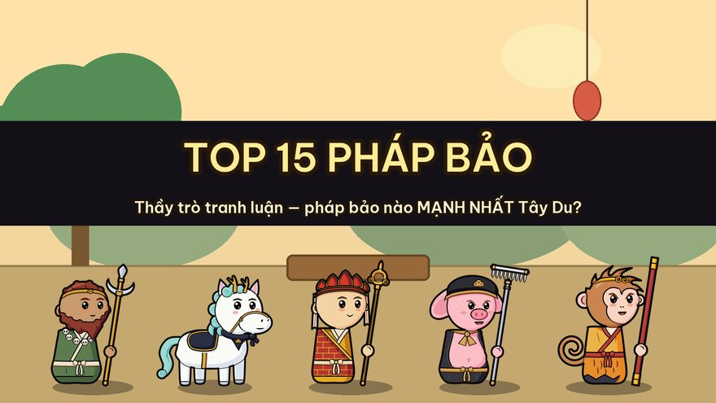
Ngộ Không: "Gậy Như Ý của lão Tôn, một gậy sập cả Thiên Cung!" — Sa Tăng: "Ta xếp hạng đàng hoàng. Đại sư huynh… e là hôm nay gậy của ngươi KHÔNG đứng số một đâu." — Ngộ Không: "HẢ?! Món nào dám?!"
15 khung hình tĩnh + lời thoại, đúng mạch kịch bản (đã chấm 91/92). Mỗi pháp bảo có thêm khung ⚡ minh họa sức mạnh (gạch vàng). Duyệt bố cục & mạch kể trước khi làm video.
NHÁP — chờ bạn duyệt
Ngộ Không: "Gậy Như Ý của lão Tôn, một gậy sập cả Thiên Cung!" — Sa Tăng: "Ta xếp hạng đàng hoàng. Đại sư huynh… e là hôm nay gậy của ngươi KHÔNG đứng số một đâu." — Ngộ Không: "HẢ?! Món nào dám?!"
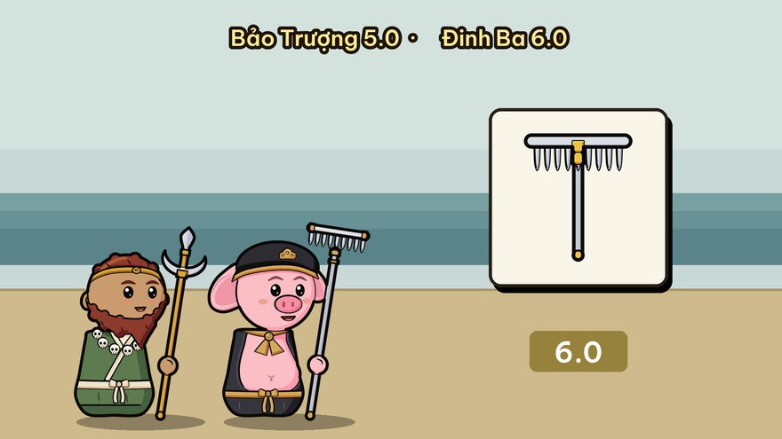
Sa Tăng: "Bảo Trượng — Lỗ Ban đẽo từ gỗ sa-la cung trăng, 5.048 cân." Bát Giới: "Đinh Ba cũng Lão Quân rèn! Nhưng cả hai là đồ giữ nhà thôi — so đồ đỉnh phía sau thì xách dép."
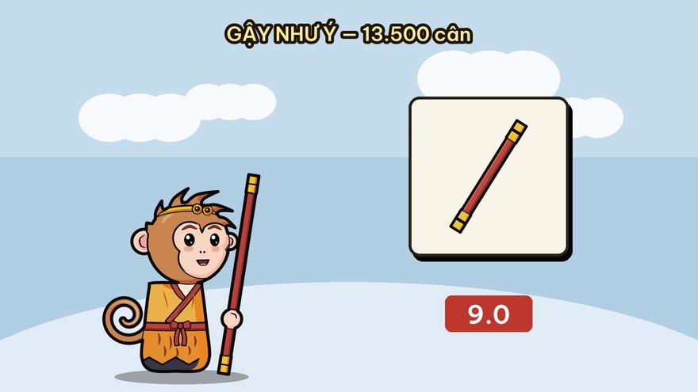
Ngộ Không: "Định Hải Thần Châm trấn đáy Đông Hải — một vạn ba nghìn năm trăm cân!" Sa Tăng: "Toàn đỉnh, nhưng trục khắc chế yếu — chín, không phải mười." (FANFARE)
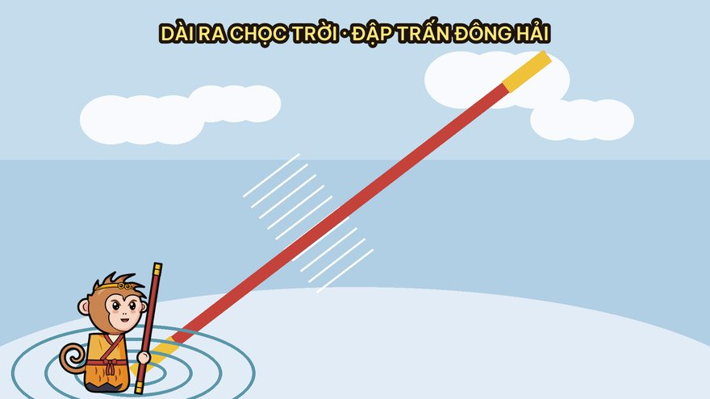
Gậy biến dài chọc thủng trời, thu nhỏ giấu trong tai; đập xuống — Định Hải Thần Châm trấn đáy Đông Hải.
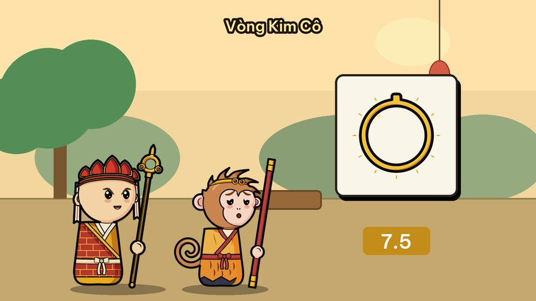
Bát Giới: "Sư phụ chỉ cần lẩm bẩm ba câu — đại sư huynh lăn ra ôm đầu! Pháp bảo mạnh nhất Tây Du nè!" Đường Tăng: "Vũ khí lợi hại nhất, đôi khi để GIỮ người lại."
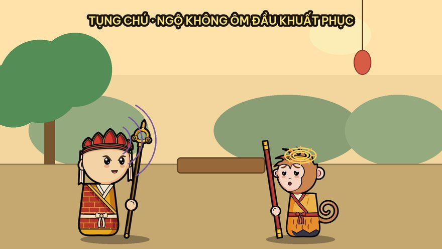
Đường Tăng niệm chú — vòng kim cô siết đầu, Ngộ Không ôm đầu quỳ sụp, khuất phục.
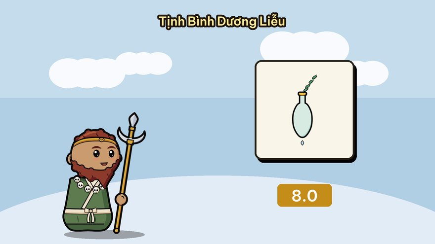
Sa Tăng: "Một giọt cam lồ — cải tử hoàn sinh." Ngộ Không: "Bình đó chứa cả một biển nước, thu Hồng Hài Nhi. Nhỏ mà chứa cả đại dương!"
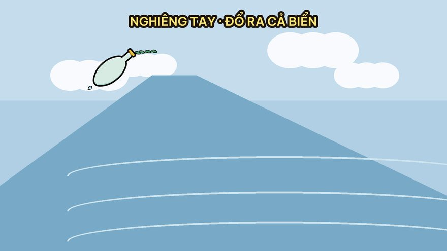
Nghiêng tịnh bình — đổ ra cả một biển nước (lúc thu Hồng Hài Nhi).
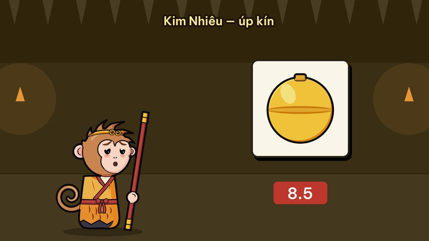
Ngộ Không: "Kim Nhiêu úp ta kín mít, gậy chọc không thủng." Bát Giới: "Phải mời hăm tám tinh tú, Kháng Kim Long lấy sừng chọc thủng mới lôi được đại sư huynh ra!"
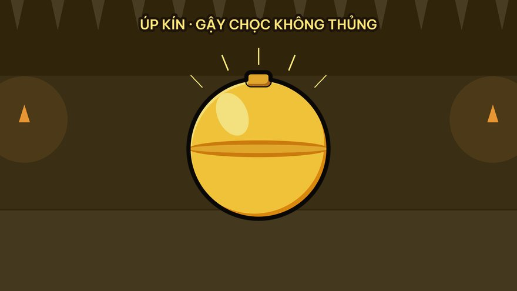
Chũm choẹ úp kín thành cầu — biến hoá gì cũng không thoát, gậy chọc không thủng.
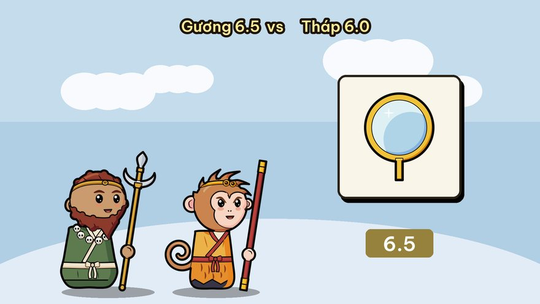
Sa Tăng: "Gương soi mọi yêu lộ nguyên hình; tháp thu người vào trong." Ngộ Không: "Sáu rưỡi cho cái gương soi thật–giả cả thiên hạ? Oan cho nó! Để khán giả phân xử."
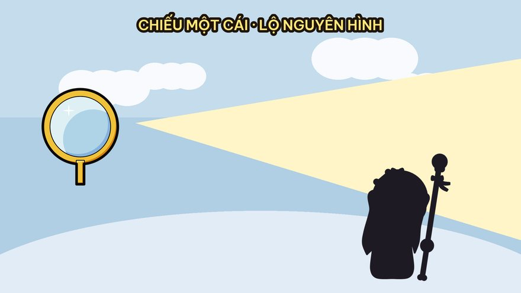
Gương chiếu một luồng sáng — yêu quái đẹp hiện nguyên hình bộ xương.
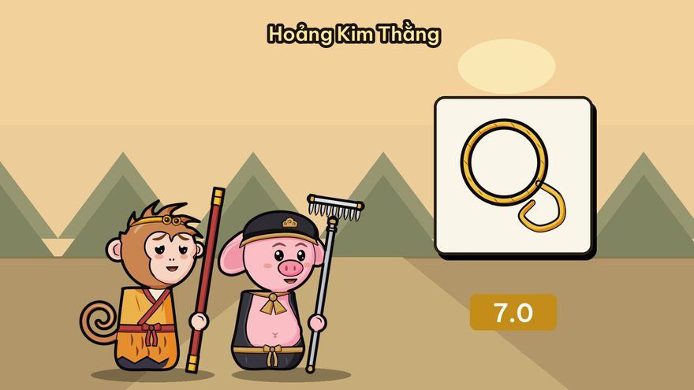
Ngộ Không: "Dây vàng trói cả thần tiên, càng giãy càng chặt." Bát Giới (ghi sổ): "Bị trói — một lần nữa!" Ngộ Không: "Còn ngươi? Bị Hồng Hài Nhi tóm bỏ bao, đòi hấp chín!"
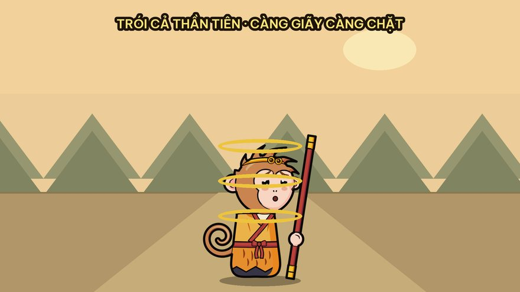
Dây vàng tự quấn trói cả thần tiên — càng giãy càng siết chặt.
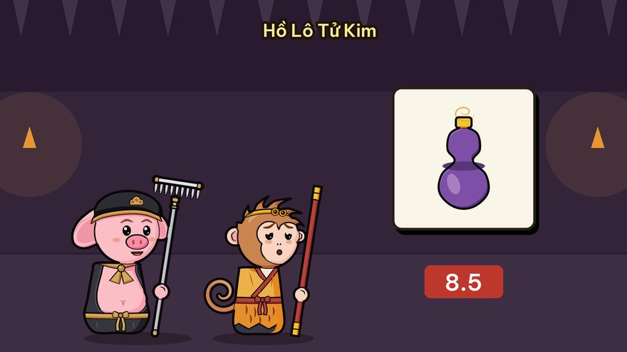
Bát Giới: "Gọi đúng tên, ngươi dạ một tiếng là bị hút tọt vào, một lát hoá nước!" Ngộ Không: "Ta tráo hồ lô giả, xưng tên đảo Giả Hành Tôn mới thoát — đấu TRÍ chứ bộ!"
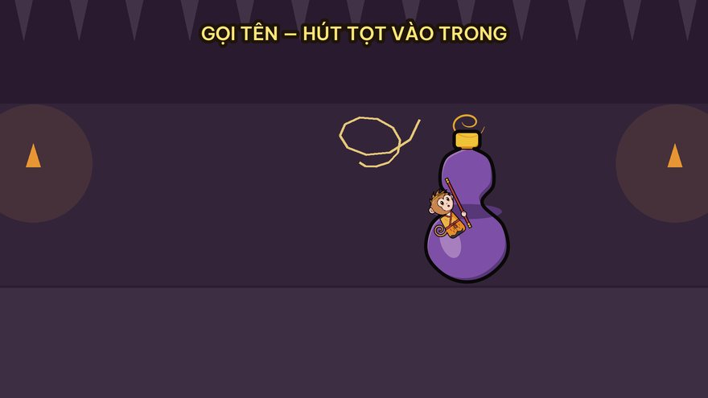
Gọi đúng tên, Ngộ Không dạ một tiếng là bị hút xoáy tọt vào hồ lô.
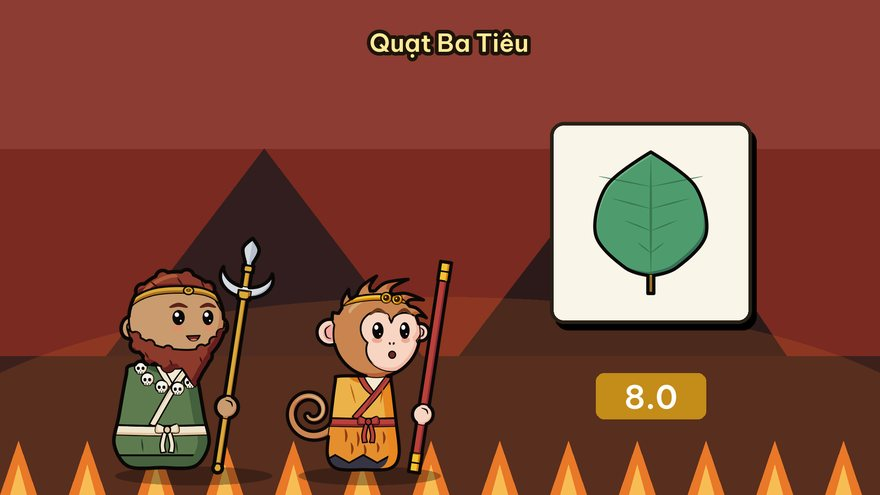
Sa Tăng: "Một phẩy dập tám trăm dặm lửa Hoả Diệm Sơn." Ngộ Không: "Phẩy vào người thì bay tám vạn bốn nghìn dặm! Phải nuốt Định Phong Đan mới đứng yên."
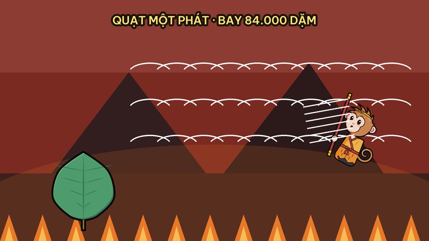
Quạt phẩy một cái — luồng gió khổng lồ thổi Ngộ Không bay tám vạn tư dặm.
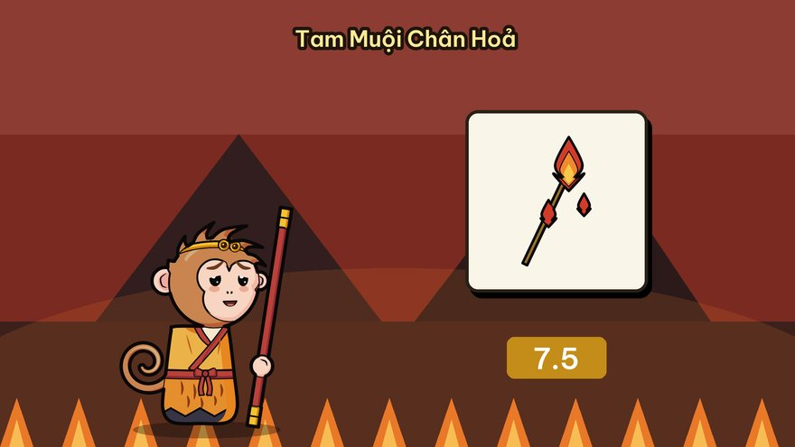
Ngộ Không: "Lửa tam muội, nước dội càng cháy — ta suýt toi mạng, phải cầu Bồ Tát." Bát Giới: "Một đứa con nít mà hành đại sư huynh — hay tại đại ca già rồi ha?"
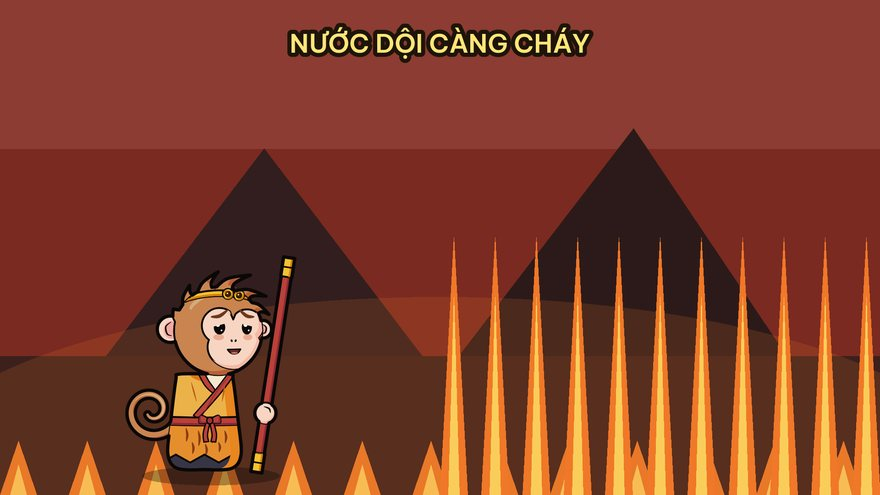
Tam Muội Chân Hoả phun biển lửa — nước dội càng cháy, Ngộ Không ho khói.
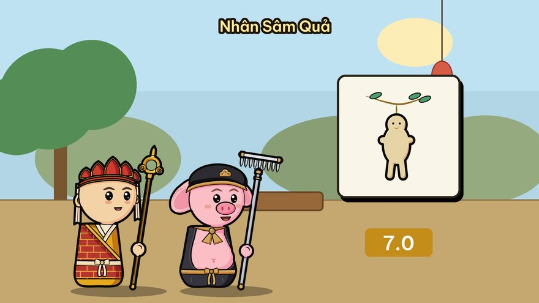
Đường Tăng: "Nhân Sâm Quả của Trấn Nguyên Đại Tiên — Địa Tiên chi tổ." Bát Giới: "Ăn một quả bốn vạn bảy nghìn năm! Mà con nuốt chửng, tiếc đứt ruột!"
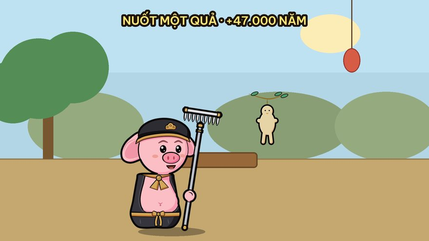
Bát Giới nuốt chửng một quả nhân sâm — cộng bốn vạn bảy nghìn năm tuổi thọ.
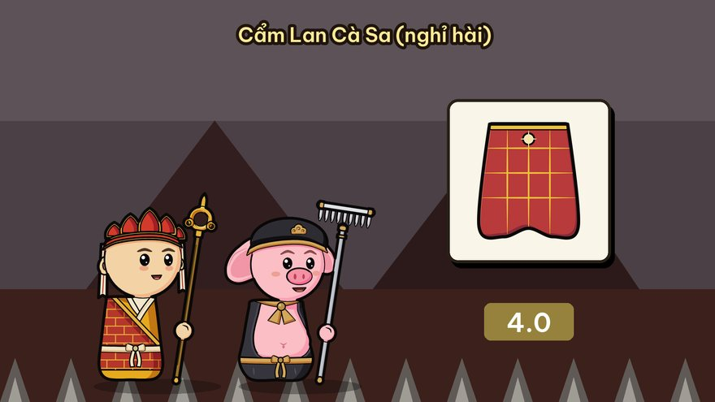
Bát Giới: "Cà sa khoe một phát, ông sư già tham đốt cả thiền viện để cướp!" Ngộ Không: "Bốn điểm! Đồ mạnh kiểu phá hoại nội bộ ha!"
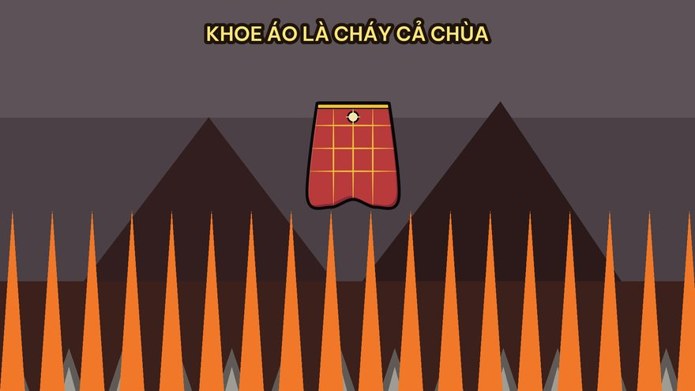
Khoe cà sa gấm — ông sư tham đốt cả thiền viện để cướp, suýt toi cả đoàn.
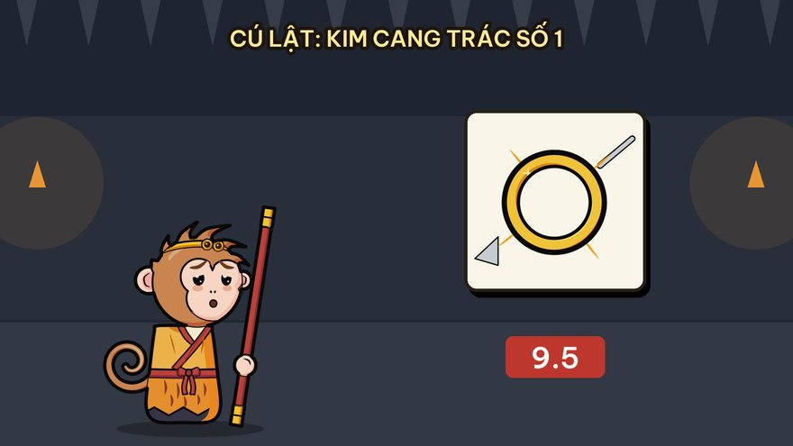
Ngộ Không: "Kim Cang Trác hút bay gậy Như Ý của ta — ta trơ tay!" Sa Tăng: "Con trâu xanh Lão Quân cưỡi. Chín rưỡi, cao nhất bảng!" Ngộ Không (lặng người): "Kẻ hạ ta năm xưa… là một cái vòng của con trâu."
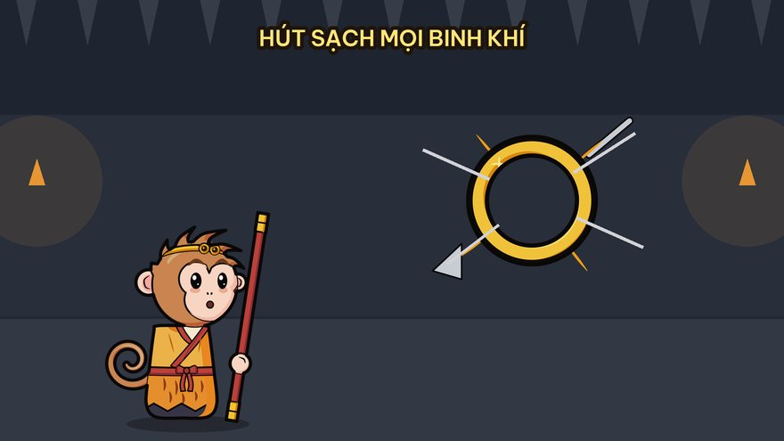
Kim Cang Trác bay ra hút sạch binh khí — gậy Như Ý cũng bị hút, Ngộ Không trơ tay.
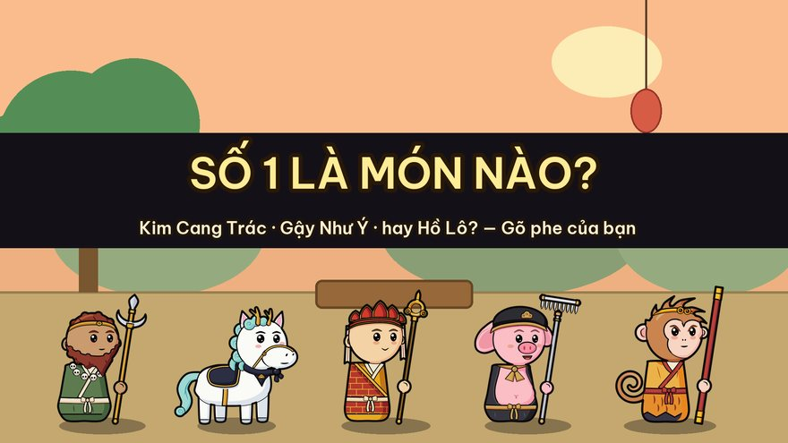
Bát Giới (đọc sổ): "Đại sư huynh bị: niệm chú, úp chuông, hút hồ lô, trói dây, thổi bay, thiêu, hút mất gậy — BẢY LẦN!" Đường Tăng: "Thứ hợp cảnh, mới là thứ mạnh nhất." Sa Tăng: "Theo bạn số 1 là món nào?"